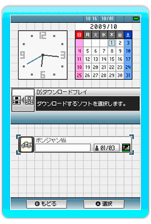
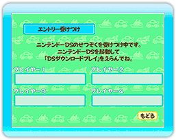

■みんなであそぶ
２人〜４人で対戦する事ができるモードです。
対戦をするためには人数分のニンテンドーDSが必要となります。
（ニンテンドーDS、ニンテンドーDSLite、ニンテンドーDSiのいずれかをご用意ください）
２ボタンで決定後、プレイ人数選択画面が表示されます。
＜ゲームをはじめるまでの準備＞
１.参加人数の決定
２人〜４人の参加人数を選択してください。
２.DSエントリー画面
使用するニンテンドーDSの接続を行います。
使用するニンテンドーDSの電源を入れて「DSダウンロードプレイ」を選んでください。
しばらくするとダウンロードプレイ選択画面に「ポンジャンWii」が表示されますので、ダウンロードを行ってください。

ダウンロードを開始するとWiiのエントリー受けつけ画面に接続しているニンテンドーDSの名前が表示されます。
人数分のニンテンドーDSが接続されたら決定を押してください。
ソフトの配信が開始されます。
３.キャラクターの選択
ニンテンドーDSで使用するキャラクターを選択してください。
全てのプレイヤーのキャラクターが選択されたらWiiリモコンの十字ボタンでWii画面のカーソルを「決定」に合わせて２ボタンを押してください。
４.サイコロを振る
ニンテンドーDSのAボタンを押してサイコロを振ってください。
全員振り終わり、一番数字の大きいプレイヤーが親になります。
５.ゲーム開始
親のプレイヤーからパイを取っていき、手元のパイから好きなパイを１枚捨てていきます。
ポンやリーチなどが行える状態になると、ニンテンドーDS画面上に自動でメッセージが表示されます。「はい」「いいえ」のどちらかを選んでAボタンを押してください。
６.継続・終了の確認
２周目が終了した時点で、継続するか終了するかの確認画面が表示されます。
もういちど最初から
得点やコンピューターキャラクターをリセットして、もう一度最初からプレイします。
続ける
現在の状態を引き継いで、プレイを続けます。
おわる
ゲームを終わります。